21. Ядро Linux
Мы с вами частично знакомы с некоторым функционалом ядра – оно отвечает за time sharing, управление процессами, их приоритетами и т.п, также управление памятью – та же виртуальная память, swap и всё что с этим связано, ну и из недавнего – отвечает за проверку прав на файлы - каким пользователям к каким файлам есть доступ. Это далеко не всё, чем занимается ядро, что-то мы ещё будем разбирать по мере изучения, но пока давайте разберём, что из себя представляет ядро и что администратору с ним делать.
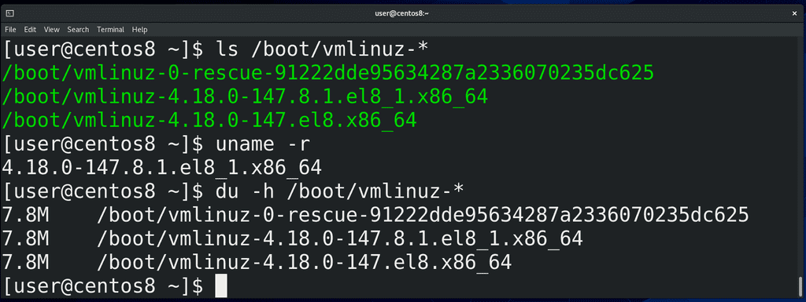
Для начала, ядро - это программа. В отличии от других программ, оно лежит в директории /boot и называется vmlinuz:
ls /boot
Почему оно лежит здесь и что это за другие файлы – это касается вопроса загрузки операционной системы, что мы будем разбирать в другой раз. Как вы видите, тут несколько файлов с названием vmlinuz и они отличаются версиями. Когда мы обновили систему, у нас появилась новая версия ядра, но старая не удалилась – если с новым ядром будут проблемы, всегда можно загрузиться со старого. Версию ядра, которую мы сейчас используем, можно увидеть с помощью команды:
uname -r
Давайте посмотрим, сколько же весит ядро: для этого воспользуемся утилитой
du
которая показывает размеры файлов, с ключом -h – чтобы отображалось не в килобайтах, а в более удобном для чтения виде:
du -h /boot/vmlinuz-*
Как видите, ядро весит почти 8 мегабайт. На самом деле, буква z в слове vmlinuz говорит о том, что ядро сжато. То есть, фактически, оно весит чуть больше.
Возможно, вы знаете – ядро Linux используется везде: android смартфоны, коих больше 3 миллиардов, работают на Linux; огромное количество сетевого оборудования, серверов, всяких медиабоксов, умных телевизоров, холодильников, машин, да даже бортовые компьютеры Space X – всё это работает на Linux. Это огромное количество разнообразного оборудования, которое должно поддерживать ядро. Поэтому в разработке ядра участвуют тысячи крупнейших компаний и специалистов. И всё ради 8 мегабайтного файла? Конечно нет. В этом файле только основной функционал, необходимый для работы – работа с памятью, управление процессами и т.п. Когда же ядру нужен дополнительный функционал – допустим, чтобы работать с сетевым адаптером, видеокартой или другим оборудованием – ядро обращается к специальным файлам, называемым модулями. В модулях хранится код, необходимый для работы с оборудованием или программный функционал – допустим, драйвер для видеокарты или программа для шифрования. Обычно это происходит незаметно для пользователя – вы вставили флешку, а ядро загрузило модуль для работы с usb флешками, а также модуль для работы с файловой системой на этой флешке. На других операционных системах это может работать по другому – есть различные архитектуры ядер операционных систем. У Linux архитектура модульная – то есть какой-то функционал вынесен в модули и подгружается по необходимости. Также Linux называют монолитным – потому что всё что делает ядро происходит в рамках одной программы – а правильнее сказать – все части ядра работают в одном адресном пространстве. Помните, мы обсуждали, что это такое, когда говорили о процессах? Но так как у Linux-а огромный функционал, который бессмысленно держать одновременно в памяти – поэтому функционал вынесен в модули, благодаря чему ускоряется работа ядра.
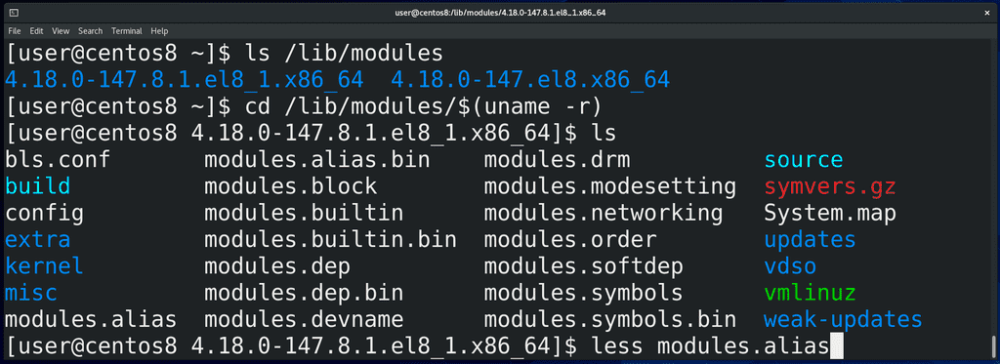
Так вот, модули ядра хранятся в директории /lib/modules/:
ls /lib/modules
где есть директории для каждой версии установленного ядра. Зайдём в директорию текущего ядра:
cd /lib/modules/$(uname -r)
ls
и посмотрим файл modules.alias:
less modules.alias
Тут перечислено - для каких устройств какие модули грузить в ядро.
В отличии от Windows, где вы ставите систему, а потом доустанавливаются драйвера, в Linux большинство драйверов уже предустановлены в виде модулей. Это благодаря тому, что многие производители оборудования сотрудничают с разработчиками ядра и предоставляют открытый исходный код драйверов на оборудование. Но, естественно, далеко не все производители предоставляют исходный код своих драйверов, из-за чего что-то может не работать из коробки – зачастую, это касается драйверов на wi-fi. Иногда, допустим, в случае с драйверами на видеокарты Nvidia, находятся энтузиасты, которые с помощью реверс инжиниринга создают свободные драйвера – т.е. берут драйвер с закрытым исходным кодом, изучают его с помощью специальных программ и методик и стараются воссоздать этот драйвер. Для видеокарт Nvidia таким образом создан драйвер nouveau. Зачастую это работает – естественно без каких-либо гарантий, потому что драйвер написан не самим производителем. При этом сам производитель – тот же Nvidia, также предоставляет свой драйвер в виде модуля, но уже с закрытым исходным кодом, т.е. проприетарный, поэтому он не бывает включён в ядро по умолчанию, из-за чего нужно самому доустанавить этот модуль. К примеру, после установки Centos на Virtualbox, мы с вами установили гостевые дополнения Virtualbox вручную именно потому, что они не под лицензией GPL, хотя сам Virtualbox имеет открытый исходный код с лицензией GPL. Всё это к тому, что если вы поставили Linux и у вас что-то не работает, допустим, wifi, то, скорее всего, производитель wifi адаптера не открыл исходный код своих драйверов и вам придётся искать нужный драйвер на сайте производителя, либо гуглить. Однако, некоторые юзер-френдли дистрибутивы, допустим Ubuntu, делают это за вас – после того, как вы установите Ubuntu, система найдёт нужные проприетарные драйвера и предложит вам их установить, что удобно для новичков.
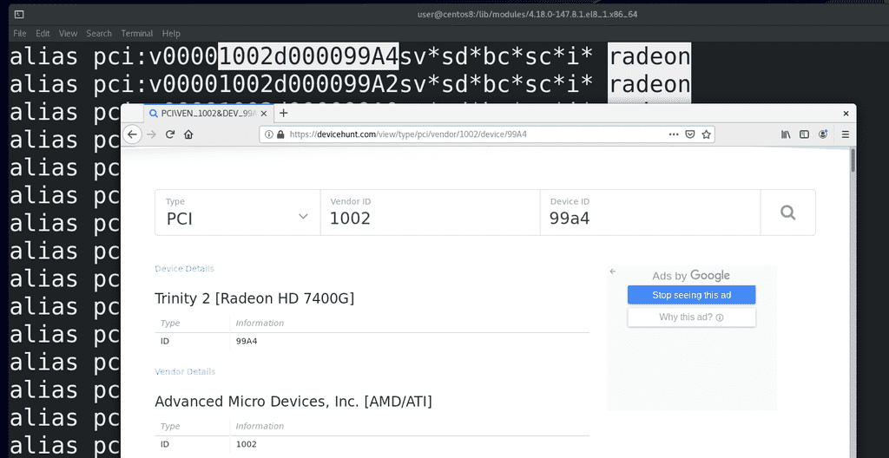
Возвращаясь к нашему файлу, во втором столбике у нас перечислены идентификаторы оборудования – так называемые hardware id. Возьмём для примера radeon - /radeon – это видеокарты от AMD. Чтобы было удобнее, откроем сайт devicehunt.com – где мы можем увидеть информацию о вендорах и оборудовании. Так вот, если ядро видит, что к pci шине подключено устройство, у которого vendor id – 1002, а device id – 99A4 – ядро знает, что для этого устройства нужен модуль с названием radeon. Тут могут быть ещё версии какого-то оборудования, классы и подклассы – но нам это сейчас не особо важно. Если вам интересно, что значат все эти обозначения, посмотрите по ссылке.
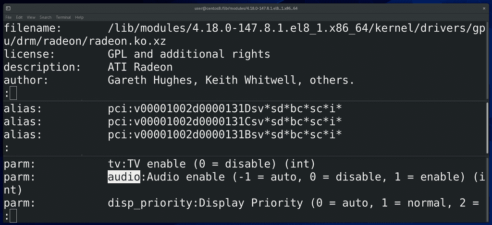
Сам этот файл не статичный, он генерируется от информации из самих модулей. Чтобы увидеть информацию о каком-нибудь модуле, можно использовать команду modinfo – допустим:
modinfo radeon | less
Тут мы видим расположение и имя файла, причём, у всех модулей расширение .ko, ну а .xz в конце означает, что модуль в сжатом виде. Также лицензия, автор, описание. И чуть ниже у нас alias-ы – собственно на основе этого и генерируется файл modules.alias, который мы смотрели. Ну и ниже – параметры – функционал оборудования на уровне драйвера. Допустим, audio – будет ли у нас видеокарта работать со звуком через тот же hdmi.
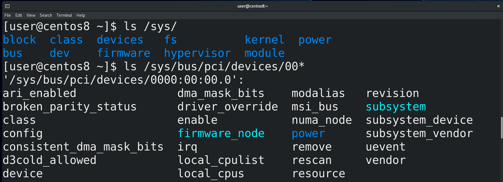
Так вот, недавно мы узнали о виртуальной файловой системе procfs, через которую ядро нам показывает информацию о процессах. А для структурированной информации об устройствах и драйверах есть виртуальная файловая система sysfs, доступная в директории /sys:
ls /sys
ls /sys/bus/pci/device/00*
И хотя тут куча файлов, через которые можно увидеть очень много информации, сидеть и копаться в этих файлах не всегда удобно, есть утилиты, которые показывают эту же информацию в более компактном и простом виде.
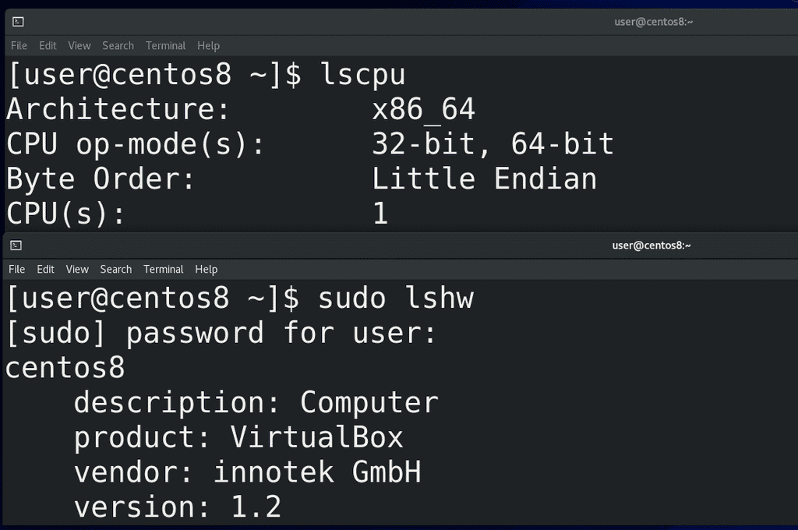
Например:
lscpu
показывает информацию о процессоре,
lspci
показывает информацию об устройствах, подключённых на pci шину,
lsusb
устройства, подключённые к usb. Для более подробной информации вы можете использовать lshw:
sudo lshw
а из графических утилит есть hardinfo.
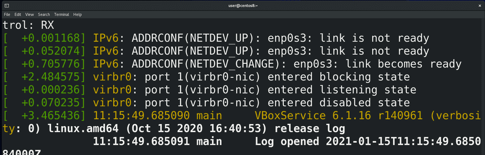
Чтобы видеть, что происходит в ядре при запуске системы или сейчас, например, вы вставили флешку и хотите понять, видит ли её система или нет, вы можете использовать утилиту dmesg:
sudo dmesg -wH
Запустили команду, вставили флешку или любое другое устройство, и тут вы увидите, как ядро распознаёт устройство.
Ядро, при виде какого-нибудь оборудования или при необходимости работы с каким-нибудь программным функционалом, загружает модули автоматически. И хотя работать с этим вам придётся не так часто, вы должны иметь представление, как это работает и как это менять. Например, может быть требование, чтобы система игнорировала флешки, хотя, по умолчанию, вы вставили флешку и она работает.
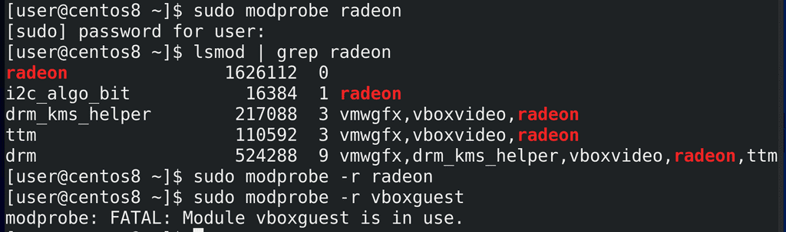
И так, для управления модулями ядра используется утилита:
modprobe
Допустим, если хотим загрузить модуль radeon, пишем:
sudo modprobe radeon
Увидеть можем с помощью утилиты lsmod, которая показывает загруженные модули:
lsmod | grep radeon
Одни модули могут работать с другими и сами могут использоваться какими-то процессами. Например, чтобы выгрузить модуль из ядра, можно использовать тот же modprobe с ключом -r:
sudo modprobe -r radeon
Этот модуль не использовался, поэтому мне получилось с лёгкостью его выгрузить. Но есть модуль, допустим, vboxguest, который используется и убрать его с помощью modprobe не получится:
sudo modprobe -r vboxguest
Предварительно нужно избавиться от процессов, которые используют этот модуль. Например, чтобы выгрузить драйвер видеокарты, вам нужно будет предварительно завершить все приложения, использующие графический интерфейс.
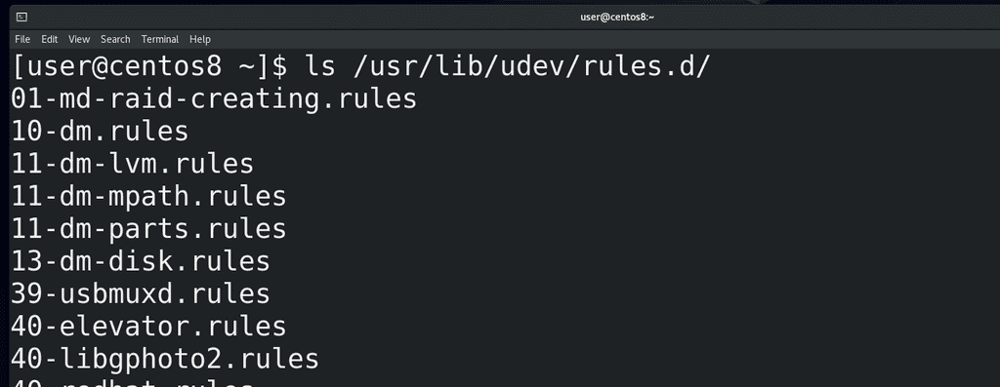
Так вот, возвращаясь к теме про автоматическую загрузку модулей. В системе есть программа, называемая udev – именно она отвечает за управление устройствами. И когда ядро видит новое устройство, оно создаёт событие, которое отслеживает udev. У udev есть большое количество правил:
ls /usr/lib/udev/rules.d/
которые оно применяет при виде того или иного события. Например, udev видит в событии, что в usb подключено устройство, которое говорит что оно является накопителем – и у udev есть правило, которое при виде такого устройства создаёт для него специальный файл в директории /dev с таким-то названием – допустим, sdb. Этот файл ядро связывает с драйвером, работающим с оборудованием. Таким образом наша флешка становится файлом, благодаря чему мы через этот файл можем взаимодействовать с устройством. Точно также можно в udev прописать, чтобы при виде usb устройства для него передавался специальный параметр, который бы запрещал устройству что-либо делать. Углубляться в udev мы пока не будем, для начала хватит понимания, зачем он вообще нужен.
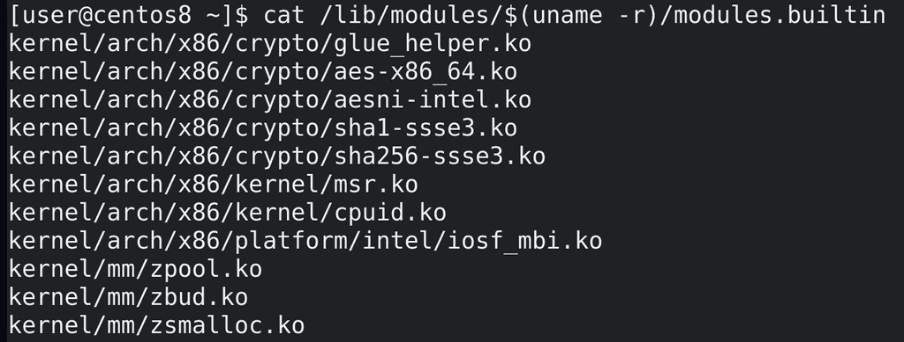
Модули можно скомпилировать в ядро – тогда отпадает необходимость загружать модули из файлов, но это увеличивает размер ядра. Такие модули называются встроенными и их список можно увидеть в файле modules.builtin:
cat /lib/modules/$(uname -r)/modules.builtin
А те модули, которые загружаются при необходимости и которые можно, теоретически, выгрузить, называются загружаемыми. Встроенные же модули выгрузить из ядра не получится.
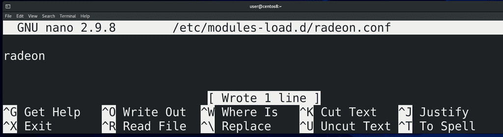
Иногда может понадобится, чтобы загружаемые модули загружались всегда при включении компьютера. Для этого нужно создать файл в директории /etc/modules-load.d/ c .conf в конце имени, допустим, radeon.conf:
sudo nano /etc/modules-load.d/radeon.conf
где вписываем название модуля, которые мы хотели бы загружать в ядро при включении. Теперь, после перезагрузки, этот модуль автоматом загрузится.
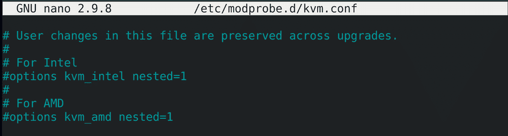
Если же нам нужно, чтобы какой-то определённый модуль не загружался при включении или загружался с определёнными параметрами – теми параметрами, которые мы видели с modinfo radeon - то для этого нужно создать файл в директории /etc/modprobe.d тоже заканчивающийся на .conf, например, kvm.conf:
sudo nano /etc/modprobe.d/kvm.conf
Тут у нас есть закомментированные примеры. Чуть подробнее об этом можно почитать на арчвики.
Надеюсь у вас сложилось представление, что же есть ядро. Это далеко не весь функционал ядра, я его и не смогу полностью рассмотреть. Но теперь вы немного знаете про само ядро, про его модули, про драйвера и устройства, в том числе udev, который позволит вам более гибко настраивать работу системы с устройствами и директорию dev, где у нас специальные файлы, с помощью которых мы можем работать с различным оборудованием.